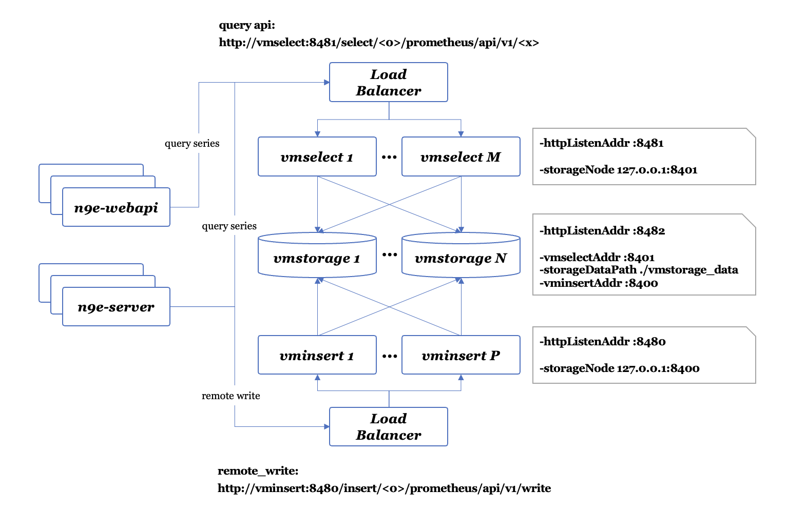
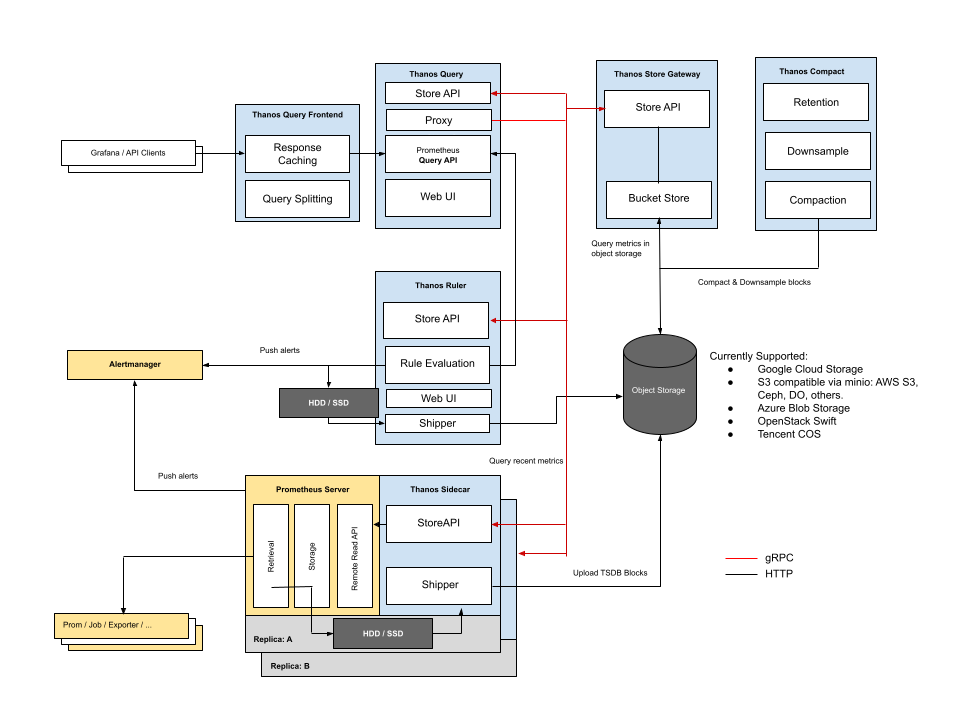
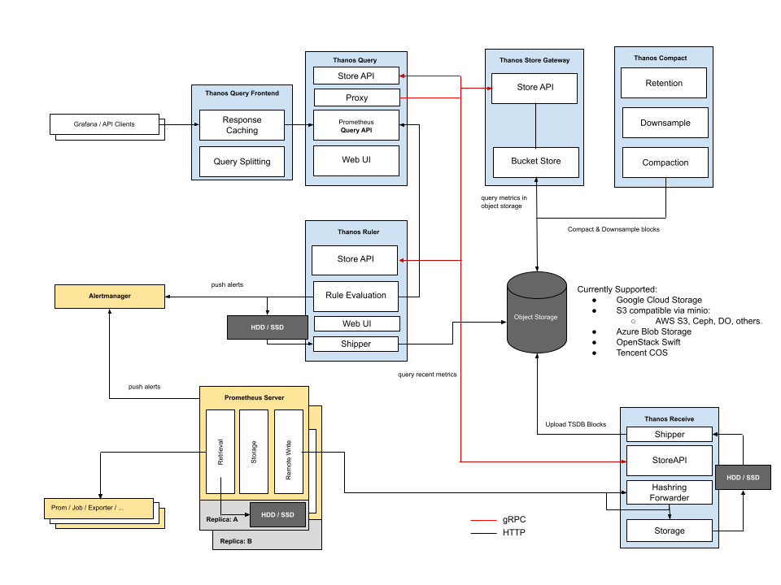
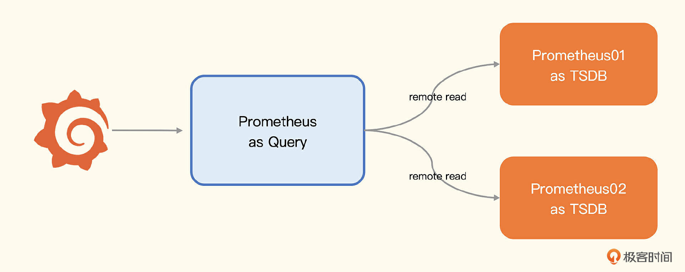

如何解决Prometheus的存储容量问题
一个软件如果什么问题都想解决，就会导致什么问题都解决不好。所以Prometheus 也存在一些不足之处，其中一个广受诟病的问题就是单机存储不好扩展。
所有场景都需要扩展容量吗？
虽然我们聊的是 Prometheus 容量扩展问题，不过我必须先说明一点，大部分场景其实不需要扩展，因为一般的数据量压根达不到 Prometheus 的容量上限。很多中小型公司使用单机版本的 Prometheus 就足够了，这个时候不要想着去扩展，容易过度设计，引入架构上的复杂度问题。
Prometheus 单机容量上限是多少？根据我的经验，每秒接收 80 万个数据点，算是一个比较健康的上限，一开始也无需用一台配置特别高的机器，随着数据量的增长，可以再升级硬件的配置。当然，如果想要硬件方便升配，就需要借助虚拟机或容器，同时需要使用分布式块存储。
每秒接收 80 万个数据点是个什么概念呢？每台机器每个周期大概采集 200 个系统级指标，比如CPU、内存、磁盘等相关的指标。假设采集频率是 10 秒，平均每秒上报 20 个数据点，可以支持同时监控的机器量是 4 万台。
800000÷20=40000
可以看出，每秒接收 80 万数据点，其实是一个很大的容量了。当然，如果使用 node-exporter，指标数量要多于 200，800 左右，那也能支持 1 万台机器的监控。
不过刚刚我们只计算了机器监控数据，如果还要用这个 Prometheus 监控各类中间件，那就得再做预估计算了。有些中间件会吐出比较多的指标，有些指标其实用处不大，可以丢掉（drop），当然这就是另一个话题了，后面监控实战部分我们会详细讲解，这里暂不展开。
如果单个 Prometheus 实在是扛不住，也可以拆成多个 Prometheus，根据业务或者地域来拆都是可以的，这就是下面要介绍的 Prometheus 联邦机制。
原本一个 Prometheus 解决不了的问题，拆成了多个，然后又把多个Prometheus的数据聚拢到中心的Prometheus中。但是，中心的Prometheus仍然是个瓶颈。所以在联邦机制中，中心端的Prometheus去抓取边缘Prometheus数据时，不应该把所有数据都抓取到中心，而是应该 **只抓取那些需要做聚合计算或其他团队也关注的指标**，大部分数据还是应该下沉在各个边缘Prometheus内部消化掉。
怎么做到只抓取特定的指标到中心端呢？通过 match[] 参数，指定过滤条件就可以实现，下面是中心 Prometheus 的抓取规则。
scrape_configs:
- job_name: 'federate'
scrape_interval: 30s
honor_labels: true
metrics_path: '/federate'
params:
'match[]':
- '{__name__=~"aggr:.*"}'
static_configs:
- targets:
- '10.1.2.3:9090'
- '10.1.2.4:9090'
边缘 Prometheus 会在 /federate 接口暴露监控数据，所以设置了metrics_path，honor_labels 设置为 true，意思是在标签重复时，以源数据的标签为准。过滤条件中通过正则匹配过滤出所有 aggr: 打头的指标，这类指标都是通过 Recoding Rules 聚合出来的关键指标。当然，这是我假设的一个规范。
联邦这种机制，可以落地的核心要求是， **边缘 Prometheus 基本消化了绝大部分指标数据**，比如告警、看图等，都在边缘的Prometheus上搞定了。只有少量数据，比如需要做聚合计算或其他团队也关注的指标，被拉到中心，这样就不会触达中心端 Prometheus 的容量上限。这就要求公司在使用 Prometheus 之前先做好规划，建立规范。说实话可能实施起来会有点儿难，所以我更推荐下面的远程存储方案。
远程存储方案
默认情况下，Prometheus 收集到监控数据之后是存储在本地，在本地查询计算。由于单机容量有限，对于海量数据场景，需要有其他解决方案。最直观的想法就是：既然本地搞不定，那就在远端做一个集群，分治处理。
Prometheus 本身不提供集群存储能力，可以复用其他时序库方案。时序库挺多的，如果挨个儿去对接比较费劲，于是 Prometheus 建立了统一的 Remote Read、Remote Write 接口协议，只要满足这个接口协议的时序库都可以对接进来，作为 Prometheus remote storage 使用。
目前国内使用最广泛的远程存储主要是 VictoriaMetrics 和 Thanos。下面我们简单介绍一下。
VictoriaMetrics
VM 虽然可以作为 Prometheus 的远程存储，但它志不在此。VM 是希望成为一个更好的 Prometheus，所以它不只是时序库，它还有抓取器、告警等各个组件，体系非常完备，不过现在国内基本上还只是把它当做时序库在用。
VM 作为时序库，核心组件只有 3 个，vmstorage、vminsert和vmselect。其中vmstorage 用于存储时序数据，vminsert 用于接收时序数据并写入到后端的vmstorage，Prometheus使用 Remote Write 对接的就是 vminsert 的地址，vmselect 用于查询时序数据，它没有实现 Remote Read接口，反倒实现了 Prometheus 的 Querier 接口。这是为什么呢？
因为VM 觉得 Remote Read 设计太“挫”了，性能不好，还不如直接实现 Querier 接口。这样设计的话，Grafana这类前端应用直接可以和vmselect对接，而不用在中间加一层Prometheus ，我们可以看一下VM的架构。

n9e-webapi 和 n9e-server 是 Nightingale 的两个模块，都可以看做 VM 的上层应用。通过这张图片，我们可以比较清楚地看出 VM 的架构以及与上层应用的交互方式。
n9e-webapi 通过 vmselect 查询时序数据，vmselect 是无状态模块，可以水平扩展，通常部署多个实例，前面架设负载均衡，所以 n9e-webapi 通常是对接 vmselect 的负载均衡。n9e-server 也有一些查询VM的需求，先不用关注，重点关注 Remote Write 那条线，n9e-server 通过 Remote Write 协议，把数据转发给 vminsert 的负载均衡，vminsert 也是无状态的，可以水平扩展。
vmstorage 是存储模块，可以部署多个组成集群，只要把所有 vmstorage 的地址告诉 vmselect 和 vminsert，整个集群就跑起来了，非常简单。
问题是数据通过 vminsert 进来之后，如何分片？vmselect 和 vminsert 之间没有任何关系，vmselect 在查询具体某个指标数据的时候，怎么知道数据位于哪个 vmstorage 呢？这个架构虽然看起来简单，但总感觉跟常见的分布式系统不太一样呢。
主要是因为 VM 采用了一种叫做 merge read 的方案，一个查询请求发给 vmselect 之后，vmselect 会向所有的 vmstorage 发起查询请求。注意，是所有的 vmstorage，然后把结果合并在一起，返回给前端。所以，vmselect 压根就不用关心数据位于哪个 vmstorage。此时 vminsert 用什么分片算法都无所谓了，数据写到哪个 vmstorage 都行，反正最后都会 merge read。
这个奇葩设计，看起来还挺有效的。有没有问题呢？显然是有的，就是 vmstorage 集群不能太大。如果有几千个节点，随便一个查询过来，vmselect 都会向所有 vmstorage 发起查询，任何一个节点慢了都会拖慢整体速度，这就让人无法接受了。一般来讲，一个 vmstorage 集群，有一二十个节点还是比较健康的，这个容量就已经非常大了，能满足大部分公司的需求，所以这不是个大问题。
我个人比较建议你在选型远程存储的时候使用 VictoriaMetrics，架构简单，更有掌控力。像M3虽然容量比VM大得多，但是架构复杂，出了问题反而无从着手，不建议使用。
在Prometheus存储问题的解决方案中，除了VM，还有一个影响力比较大的就是Thanos，也就是传说中的灭霸。下面我们看看灭霸是个什么招式。
Thanos
Thanos的做法和VM不同，Thanos完全拥抱Prometheus，对Prometheus做了一个增强，核心特点是使用 对象存储 做海量时序存储。你看下它的架构图。

这个架构图初看起来比较复杂，黄色部分是 Prometheus 自身，蓝色部分是Thanos，黑色部分是存储。这里边有几个核心点。
- 每个 Prometheus 都要伴生一个 Thanos Sidecar 组件，这个组件有两个作用，一是响应Thanos Query的查询请求，二是把Prometheus产生的块数据上传到对象存储。
- Thanos Sidecar 调用 Prometheus 的接口查询数据，暴露为 StoreAPI，Thanos Store Gateway 调用对象存储的接口查询数据，也暴露为 StoreAPI。Thanos Query就可以从这两个地方查询数据了，相当于近期数据从Prometheus获取，比较久远的数据从对象存储获取。
虽然对象存储比较廉价，但这个架构看起来还是过于复杂了，没有 VM 看起来干净。另外这个架构是和 Prometheus 强绑定的，没法用作单独的时序存储，比较遗憾。不过好在 Thanos 还有另一种方案，不用 Sidecar，使用 Receive 模块，来接收 Remote Write 协议的数据，写入本地，同时上传对象存储，你看一下这个架构。

从存储角度来看，这个架构和 Prometheus 就没有那么强的绑定关系了，可以单独用作时序库。关键点还是对象存储，虽然对象存储是海量、廉价的，但是延迟较高，而且一个请求拆成两部分，一部分查本地，一部分查对象存储，也没有那么可靠。
相比日志之类的数据，指标数据的体量较小，一般存储3个月就够了，所以对象存储的优势就显得没那么大了。如果是我来选型，VictoriaMetrics 和 Thanos 之间，我会选择前者。
所谓的远程存储方案，核心就是 Remote Read/Write，其实 Prometheus 自身也可以被别的 Prometheus 当做 Remote storage，只要开启 --enable-feature=remote-write-receiver 这个参数即可。下面我们来看一下 Prometheus 自身怎么来搭建集群。

图上有三个 Prometheus 进程，有两个用作存储，有一个用作查询器，用作查询器的 Prometheus 通过 Remote Read 的方式读取后端多个 Prometheus 的数据，通过几行 remote_read 的配置就能实现。
remote_read:
- url: "http://prometheus01:9090/api/v1/read"
read_recent: true
- url: "http://prometheus02:9090/api/v1/read"
read_recent: true
Prometheus 的 remote_read 也是 merge read，跟 vmselect 逻辑类似。不过VM集群是有副本机制的，使用Prometheus来做集群，不太好做副本。当然，可以粗暴地为每个分片数据部署多份采集器和PromTSDB，也基本可以解决高可用的问题。
在实际生产环境中，如果所有数据都是通过拉的方式来收集，这种架构也是可以尝试的，不过我看到大部分企业都是推拉结合，甚至推是主流，Remote Write 到一个统一的时序库集群，是一个更加顺畅的方案。